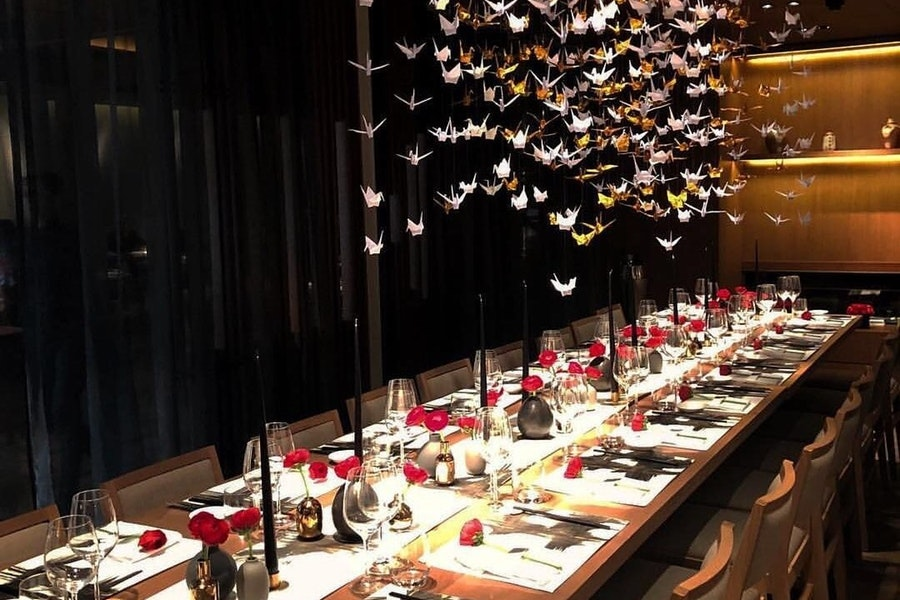

Nobu
Pioneered by famed namesake chef Nobu Matsuhisa

M inimalist setting for Japanese-Peruvian fusion cuisine.
- Yellowtail Jalapeno
6 Slices of yellowtail sashimi with yuzu soy sauce, garlic puree and sliced jalapeno
~
£22.5
~
- Baby Spinach Salad Dry Miso
Baby spinach salad mixed with yuzu juice, truffle oil, extra virgin olive oil, dried miso, grated Parmesan cheese and crispy tofu skin
~
£18.5
~
- Crispy Rice with Spicy Salmon
6 pieces of crispy sushi rice served with spicy salmon tartare, spring onion and creamy spicy sauce
~
£19.5
~
- Seared Salmon with Kurashi Sumiso
5 slices of seared salmon sashimi with onion, caviar and spring onion in a Japanese mustard miso sauce
~
£26.5
~
- Black Cod Miso
Our most iconic dish. Alaskan Black cod fillet (220g) marinated in sweet den miso sauce
~
£42.5
~
- Shrimp Spicy Garlic
Sauteed tiger shrimp with asparagus and shitake mushrooms in a spicy garlic sauce
~
£28
~
- Lobster Wasabi Pepper
Lobster sauted with vegetables and mushrooms in a wasabi pepper sauce
~
£45
~
- Lobster Spicy Lemon Garlic
Lobster sauted with vegetables and mushrooms in a spicy lemon garlic sauce
~
£45
~
- Scallop Wasabi Pepper
Scallops sauted with vegetables and mushrooms in a wasabi pepper sauce
~
£42
~
- Beef Kushiyaki with Anticucho Sauce
Two grilled beef skewers served with anticucho sauce, garnished with yuzu daikon pickle and chives
~
£23
~
- Hazelnut Ice Cream Mochi
6 pieces
~
£15
~
- Pistachio Ice Cream Mochi
6 pieces
~
£15
~
- Sub Zero
Fresh raspberries, blueberries and strawberries in a honey and blueberry cider sauce, with yoghurt ice cream
~
£12.5
~
COMO Metropolitan
19 Old Park Lane
Mayfair
London W1K 1LB
Google Map